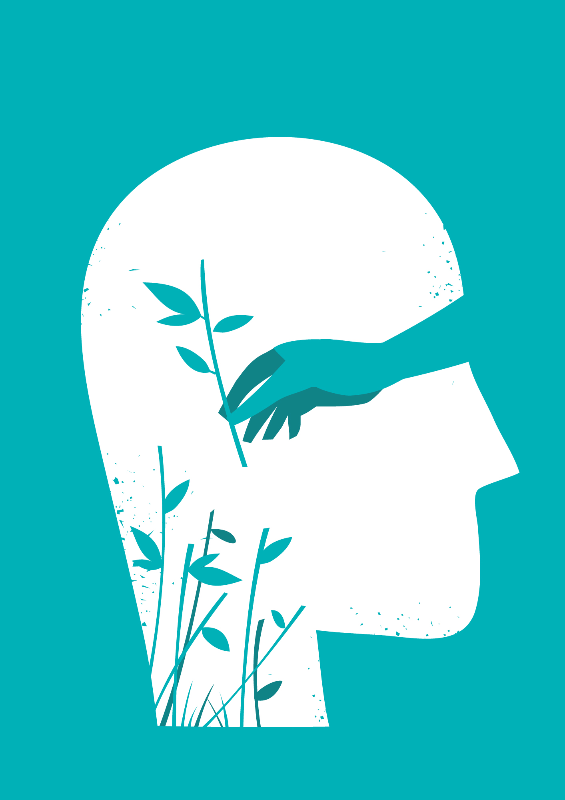

Abre la puerta a un camino de bienestar desde la comodidad de tu hogar. Dondequiera que estés, el cambio empieza aquí y ahora.
Descripción y Beneficios
En un mundo donde la comodidad y la flexibilidad se valoran más que nunca, mi terapia online se adapta a tu ritmo de vida, ofreciéndote un espacio seguro y acogedor para tu crecimiento personal. Con sesiones de 50 minutos a través de plataformas como WhatsApp Web, Zoom o Meet, la terapia online elimina las barreras físicas, permitiéndote conectarte desde cualquier parte del mundo. Esta modalidad no solo es más práctica y económica, al ahorrar en tiempo y costos de desplazamiento, sino que también te brinda la oportunidad de expresarte libremente en un entorno familiar, potenciando tu proceso de sanación

Personalización y Técnicas
Cada persona es única, y por eso, cada sesión se adapta a tus necesidades específicas. Durante nuestra primera entrevista, exploraremos juntos el enfoque que mejor resuene contigo, ya sea a través del psicoanálisis tradicional, técnicas holísticas de autoconocimiento, prácticas conductuales o ejercicios de meditación. Mi objetivo es brindarte las herramientas y estrategias más efectivas para que puedas enfrentar y superar tus desafíos, logrando un equilibrio emocional, reducción de la ansiedad, y, sobre todo, un profundo bienestar con uno mismo
Resultados Esperados
Al embarcarte en este viaje de terapia online, te invito a experimentar transformaciones significativas: desde mejorar el manejo de tus emociones y disminuir la ansiedad, hasta fortalecer tu autoestima y encontrar esa paz interior que tanto buscas. Cada paso que damos juntos está diseñado para llevarte hacia una versión más plena y equilibrada de ti mismo